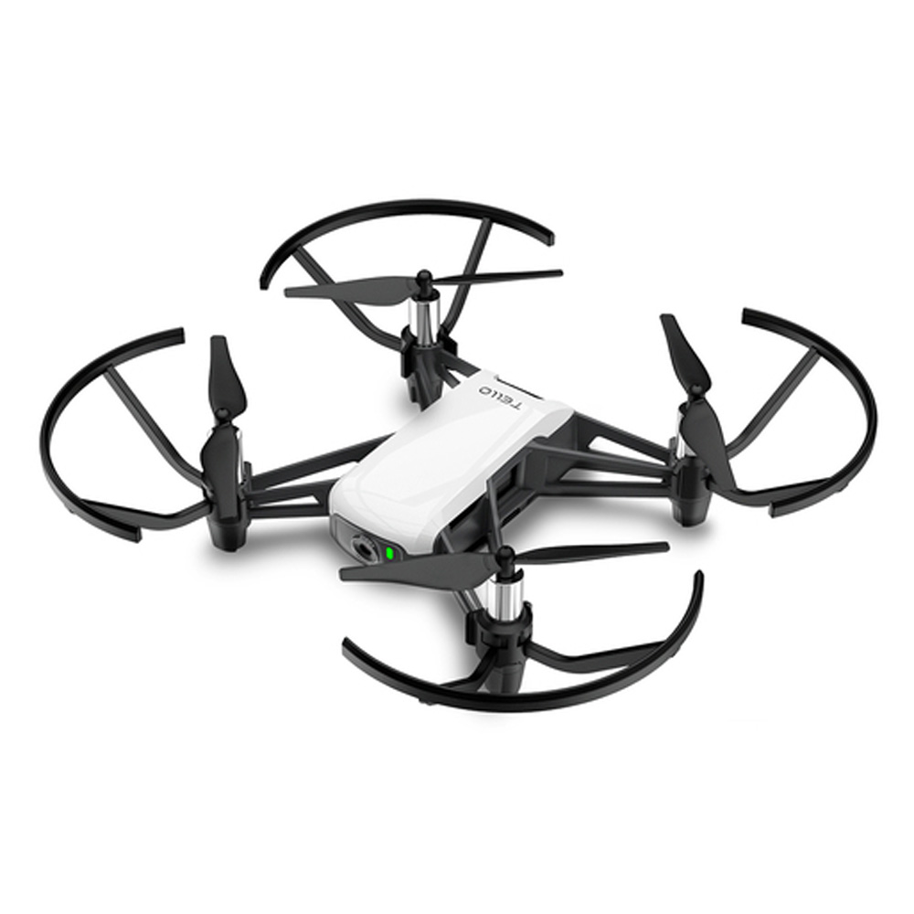

What is it about?

This project was a crucial part of my bachelor's education, where I delved into the fascinating world of classical computer vision. The primary objective was to implement various algorithms to perform autonomous tasks, including:
- Autonomous Navigation: Enabling systems to navigate independently without human intervention.
- Color Tracking: Developing algorithms to track and follow specific colors in a dynamic environment.
- Gesture Recognition: Implementing techniques to recognize and interpret human gestures for interactive applications.
- Secure Zone of Flight Auto Limiting: Ensuring safety by automatically restricting flight zones to prevent collisions and unauthorized access.
This comprehensive project provided hands-on experience with real-world applications of computer vision and autonomous systems, equipping me with valuable skills for my future endeavors.